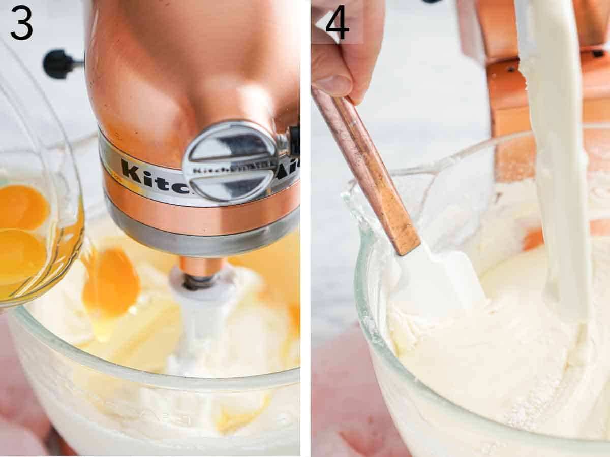
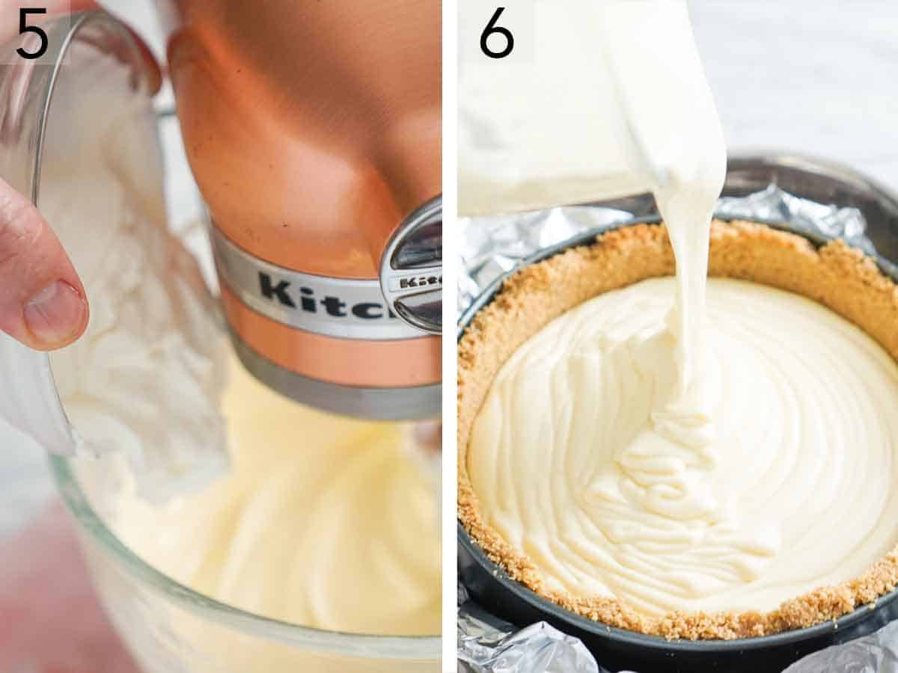

Graham cracker crust — for the buttery, crisp crust, you need graham cracker crumbs, melted butter, and sugar. You can buy premade crumbs in a box at the grocery store or blitz your own graham crackers in a food processor. Check out my graham cracker crust recipe for all the tips you need to know to make the perfect crust.
Cream cheese — blocks of plain, full-fat cream cheese is the best option. Low-fat cream cheese contains more water and can produce a cheesecake with an extra dense or grainy texture.
Granulated Sugar — you need 1 cup of white sugar to sweeten the cheesecake filling.
Vanilla — use high-quality vanilla extract, not vanilla essence. If you prefer a bakery-style look with little vanilla flecks in the batter, you can scrap the seeds from a vanilla bean or use vanilla bean paste.
Lemon juice — a little lemon juice cuts through the richness of the filling. This addition won’t taste like a lemon cheesecake, but it does enhance the flavor of the filling making it extra delicious!
Eggs — bring the eggs to room temperature before you start working on this recipe. If the eggs are cold, the cream cheese can firm back up when mixed with the eggs and form lumps in the batter.
Sour cream — use full-fat sour cream for the best results. Just like the eggs, let it come to room temperature for 30 minutes to 1 hour before you start the recipe.
Make the buttery graham cracker crust in a medium bowl by combining the graham cracker crumbs, melted butter, and sugar.
Stir together until the mixture feels like wet sand. Pour into a 9-inch springform pan. Press the crumbs into the bottom
and slightly up the sides of the pan using the bottom of a glass or measuring cup. Place on a baking sheet and bake at 350°F
for 10 minutes. Remove from the oven and let cool while making the cheesecake filling.
Place the cream cheese in a large bowl or the bowl of a stand mixer with the whip attachment. Beat on medium-low speed until
creamy and smooth. Add the sugar, salt, vanilla extract, and lemon juice. Beat until the mixture is well combined and completely
smooth. Stop and scrape down the sides of the bowl a few times during mixing to ensure everything is well incorporated.

With the mixer on medium-low speed, add the eggs one at a time.
Stop and scrape down the bowl between additions.

Once the eggs are well combined, mix in the sour cream until well incorporated.
Pour the batter into the cooled crust. Bake for 15 minutes, then reduce the oven temperature to 300°F and continue baking for
another 30 to 35 minutes or until the edges of the filling are just slightly puffed and the center wobbles slightly when shaken
gently. Turn off the oven and leave it in there with the door closed for 1 hour. Remove the cheesecake and let it cool at room
temperature for another hour, then chill it in the refrigerator for at least 6 hours or up to 3 days before serving.
How To Prevent Your Cheesecake From Cracking
Use room temperature ingredients. Make sure to bring your cold ingredients (eggs, sour cream, and cream cheese) to room temperature so they will easily incorporate without overmixing.
Don’t over-mix the batter. Over-mixing will incorporate too much air into the batter, leading to the cheesecake to puff up too much in the oven and then fall when it cools, giving you a cracked surface.
Don’t open the oven! Do not open the oven to peek once the oven has been turned off to let the cheesecake cool. The hot air from
the oven will escape, and cold air will enter the oven, causing the cheesecake to fall or crack. Abrupt temperature changes are a
big reason cheesecake fillings crack, so avoid them as much as possible.
Cool it slowly. Start by cooling the cheesecake in the oven and then at room temperature before eventually transferring it to the fridge to chill. The gradual cooling process prevents it from cracking.
topping and serving ideas
This cheesecake recipe is the perfect palette for your favorite toppings. Here are some of my favorites to serve over a cheesecake slice:
Cherry pie filling
Lemon curd
Chocolate ganache
Caramel sauce
Homemade whipped cream
Fresh fruit
Fruit sauces like strawberry or raspberry sauce. Try my strawberry cheesecake for a chunky, glossy strawberry sauce topping.
Pro Tips For Making This Recipe
Use the whisk attachment for the mixer. Many cheesecake recipes call for using a paddle attachment when beating the filling
together. I used to do the same, but it was easy to find little lumps of cream cheese even when scraping down the bowl many
times during mixing. I found that the whisk actually helps incorporate all of the ingredients more thoroughly! Just don’t
increase the mixer speed above medium-low to avoid incorporating too much air.
If your springform pan is not nonstick: You can lightly spray it with baking spray or rub the pan very lightly with oil before
pressing in the crust mixture.
Remove air bubbles: When you pour the batter into the pan, gently tap the cheesecake on the counter to pop any air bubbles in the batter.
Use an offset spatula: It is a great tool for this recipe as it helps get the top of the cheesecake super smooth before baking.
Let the cheesecake cool gradually. Don’t place it directly into the fridge to speed up the process, or it can easily crack.
For perfect slices: Warm a sharp knife with hot water for a few seconds, then dry it. Wipe off the knife between slices and rewarm it as needed.